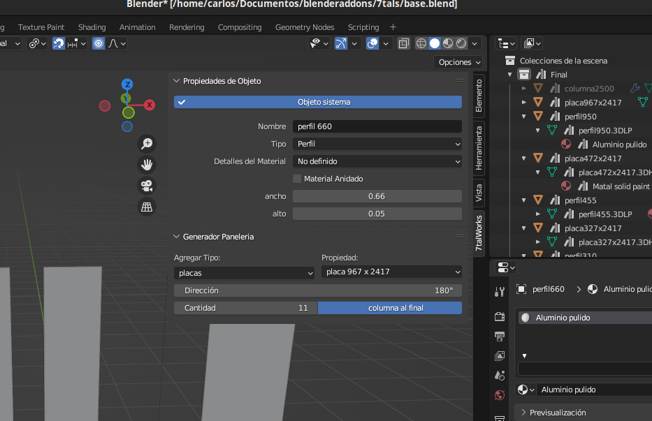
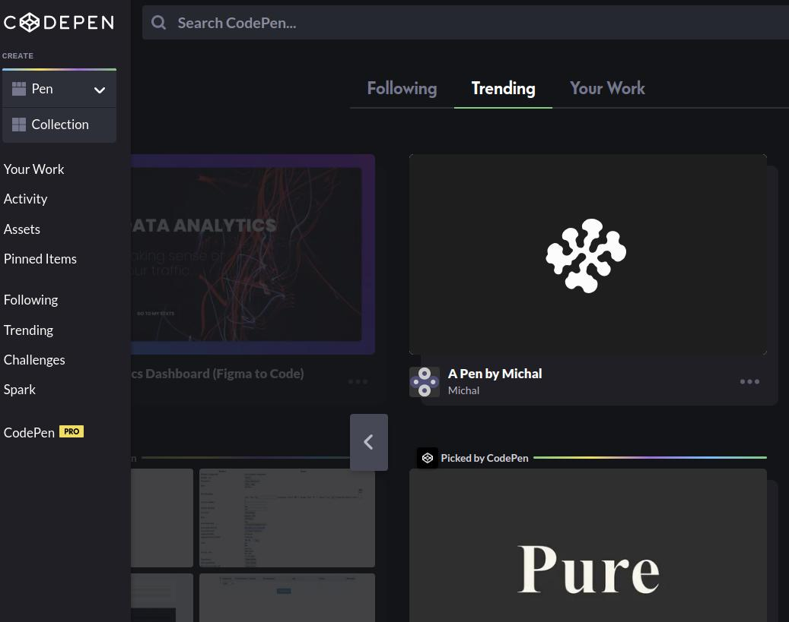

7tal Works
Un plug-in realizado en python para blender, con usos en el diseño de planos de estructuras modulares en 3d.

Pure Minesweeper
Un buscaminas realizado en css, html y js sin frameworks o librerias añadidos; con opciones de temas

Mis Pens
Algunos de mis proyectos subidos a codepen, con la finalidad de presentar ciertas soluciones en el desarrollo web